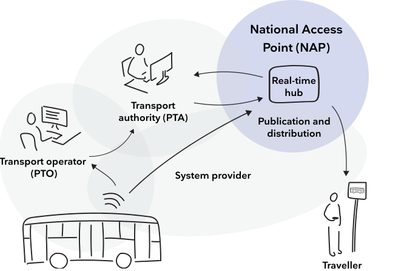
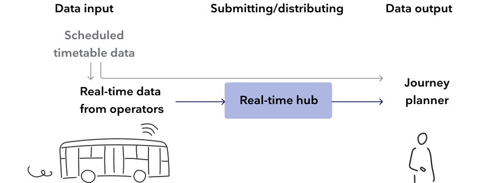
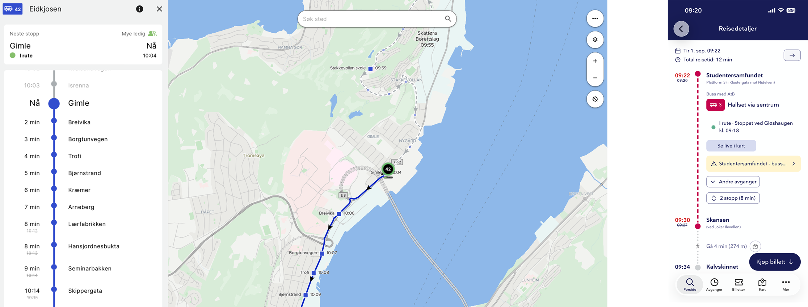
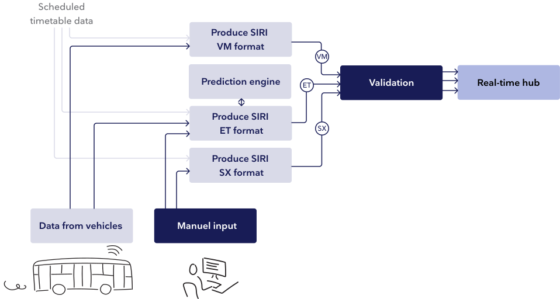
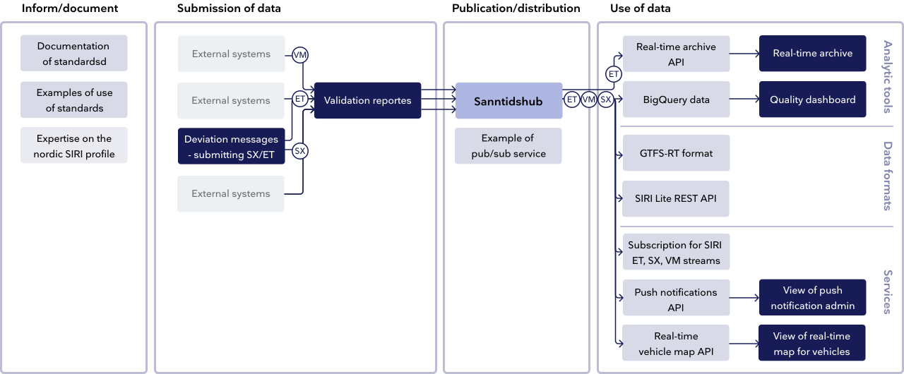
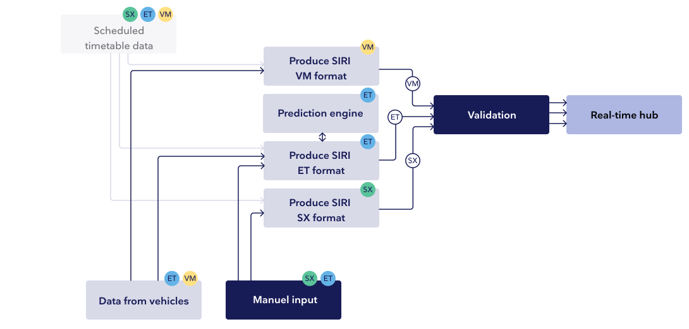

Real-time data
Real-time data gives travellers an up-to-date picture of the current situation through updated information in journey planners and on passenger information displays. It is also valuable insight for mobility providers and operators, who can adapt, optimise, and further develop their services based on what actually happened.
In Norway, all public transport providers are required to submit real-time data to the National Access Point (NAP), which in turn makes the data openly available for use. Read more about NAP here.
Entur has been appointed by JDIR to deliver the NAP function, and offers a range of services that together enable the submission, distribution and analysis of public transport data, which also includes real-time data.

What is real-time data?
When a traveller searches for a journey ahead in time, they get an overview over scheduled departures. The search results come from scheduled timetable data, with information about stop places, route layouts and scheduled departure times. This data is submitted by the transport provider regularly, often days or weeks in advance. However, as time gets closer to actual departure, unforeseen events may occur that lead to changes or delays. Real-time data is what gives the traveller updated information about the scheduled departure. Real-time information can be displayed as written information to the traveller, such as delays to departure times, platform changes or cancellations. It can also be used for real-time maps, where travellers can see exactly where the vehicle is or if the bus is crowded right now or not.
How does it work?
In order to display real-time information to travellers, location data must be submitted from a vehicle or from a person writing a manual deviation message, and linked to the correct planned departure so that it becomes visible in the journey planner or on an information display. For this to work across all the different actors involved in providing transportation, some standard formats have been established. In Norway we use three of the protocols within the SIRI standard today.

Real-time data is linked to scheduled departures from the scheduled timetable data, giving the travellers updated real-time data on the relevant scheduled departure.
Standard formats
The format is based on Transmodel - an European model for concepts and data structure within public mobility. Read about Transmodel here.
The format used for real-time data is called SIRI, which consists of several different protocols suited for sending different types of data. Entur has taken a key role in establishing the Nordic profile of SIRI, in collaboration with JDIR. Entur has been given responsibility for operationalising it in Norway. You can read about the SIRI Nordic profile here.
Today the protocols SIRI ET, SIRI VM and SIRI SX are in use in Norway.


Real-time data in use in (from top) journey planner from ATB, the real-time map from Svipper and journey planner and ticket purchase from the Entur app.
SIRI ET is an XML format for submitting, among other things, estimated departure times, cancellations or information about extra journeys. This is information shown in the journey planner when there are delays or changes. The data is tied to a specific vehicle, a specific departure on a specific route. Data is submitted every time a change occurs, which may be that the vehicle has passed a stop, or that a manual cancellation is submitted or an extra journey is set up.
Examples of data that can be sent in the SIRI ET format and shown to a traveller in their journey planner:
- Estimated departure times
- Progress (when it has departed from the previous stop)
- Occupancy - updated from the previous stop and estimates ahead
- Cancellations
- Platform changes
- Type of vehicle (on change, e.g. from train to bus)
- Whether the estimate is very uncertain
- Information about capacity and layout of the rolling stock
- APC data - accurate passenger counts (can be hidden in the journey planner)
It is not required to submit all fields of information, and what is shown in a journey planner depends both on what the transport provider submits, and on what the provider of the journey planner service chooses to show the user.
SIRI VM is an XML format that can submit position data, occupancy and data about the vehicle’s direction. This information is usually shown in a real-time map, which can also be linked to from a journey planner. This can give the traveller or control centres updated information about where the vehicle is. The data is tied to a vehicle running a specific departure on a specific route, and is submitted regularly, usually at intervals of 1-3 seconds.
Examples of data that can be sent in the SIRI VM format and shown to a traveller in a real-time map:
- Exact position
- Occupancy
- Direction of the vehicle
- Delay
- Speed
- Whether it is stuck in traffic
- Whether it is at a stop
It is not required to submit all fields of information, and what is shown in a real-time map depends both on what the transport provider submits, and on what the provider of the real-time map chooses to show the user.
Data in from mobility providers
To submit data in accordance with the standard, mobility providers must use services that can collect the data and produce it in the SIRI format. The different formats require different services, and these can be delivered by one or more suppliers, through those responsible for the public transport service (PTA) or via one or more operators (PTO). The supplier of these services may be a third party, the public transport company itself or Entur.

Validation
To ensure that incoming data is correct and gives travellers accurate and correct travel information, the data must be validated. (Read more about validation here.) If the data contains major errors that could lead to directly misleading information, it can be stopped from being passed on to the journey planner. Less conflicting errors will not be stopped, but will be flagged in validation reports, which are a good basis for improving the data.
Collection and distribution of data — the real-time hub
The real-time hub is part of the National Access Point (NAP), and collects SIRI SX, VM and ET streams from all public transport providers submitting this data in Norway. Further documentation on how the service works, along with examples of use, can be found here.
All raw data in the real-time hub is open and available to anyone who wants to use it. It can be retrieved in various formats - from subscribing directly to the SIRI streams, to more lightweight formats (REST API), GTFS-RT format or as data in BigQuery. Read more about this here.
Consuming data
Using one of these formats, the data can be used to build different types of services: for the general public with updated travel information, to give public transport providers a better overview when deviations occur, or to analyse and troubleshoot. Read more about the different formats for consuming data that Entur offers here.
Entur’s role
The responsibility for collecting, managing and sharing national timetable data, which also includes real-time data, is delegated to The Railway Directorate and Entur. This gives Entur a key role in collecting and distributing open data in the sector. Entur is also a driving force in the further development of the Nordic SIRI profile, and takes an active part in collaboration across the Nordic countries and in Europe.
What does Entur offer?

Information and documentation
Handbook N801 describes what data public transport providers are obliged to submit, and what role Entur has in Norway. Entur also has an active role in international collaboration on the further development of the SIRI protocols, and has contributed considerably to the Nordic profile.
Examples of how messages can be delivered correctly can be found on GitHub. (Read more under Publication and distribution)
Data submission
Entur currently offers a tool for submitting SX data and certain messages in ET format. The interface lets the user link text messages to departures, stop places or lines in order to inform travellers of deviations, as well as enter cancellations and extra journeys.
To use the service, an agreement must be established with Entur and a user created for the organisation. To become a partner with Entur, read more at entur.no or get in touch at kollektivdata@entur.org.
Validation
The validation checks the technical format of the messages and some basic logic to assess whether the data can be read correctly and makes sense in a travel planner. The interface itself only shows what will pass and what will fail; errors are not discarded here. What is categorised as serious errors is discarded in the real-time service itself or in the journey planner engine (OTP). The validation reports are open to everyone, and anyone submitting SX, VM and/or ET messages can use the tool to see whether the data they submit fails or not. In the user guide you can read more about what the different error messages mean.
Publication and distribution
The real-time hub receives around 70 streams of ET, VM and SX messages from transport providers in Norway, making them available for everyone. The service is an open source project, Anshar, available on GitHub together with documentation on how it receives and sends data in accordance with the SIRI protocol. On GitHub you can also find an example setup of an application showing what communication between the service and the submitter can look like, as well as examples of messages in the different formats.
Retrieving data
All data is openly available from the real-time hub, and Entur offers various formats for consuming it. It is possible to subscribe directly to the ET, VM and SX streams in SIRI format. These streams are used onwards in the journey planner, together with planning data and other data sources. A SIRI Lite REST API is also offered, for periodic retrieval of data. GTFS-RT is the format used by Google Maps among others, and is a lightweight format with less rich data. The data can also be downloaded or used directly from BigQuery. How to start using these formats is described in Entur’s developer portal or data portal.
Specific services built on real-time data
Entur offers an API that can send push notifications for given routes to travellers in their chosen travel app. The API is documented in the developer portal, and an interface has also been built showing what subscribers will see.
For a more lighte weight use of VM and ET data on vehicle positions, occupancy and estimated arrival times, a dedicated API has been developed that lets you show real-time data directly to an end user. There is also an interface showing how this data can be used.
Analysis and troubleshooting
Real Time Archive is a service providing an overview of which data was actually sent from the real-time hub to the journey planner. The service is offered both as an API and as an interface. It shows only ET messages, but it is possible to look up departures from all public transport providers and see each individual ET message submitted to the real-time hub. This makes it easier to recreate the situation as it was at a given point in time, and can help providers understand what was shown in the journey planner, and what may have gone wrong if travellers receive incorrect information.
The quality dashboard is built on historical data from BigQuery and shows a high-level picture of the quality of real-time data from the different providers, for each of the different streams. It is also possible to go into more detail and look at different elements of the data in each individual stream. The dashboard can also be used to measure the effect of any measures taken to improve quality.
There are more dashboards to explore in the data portal, which you can find here.
The role of mobility providers
Submitting and using real-time data often involves those responsible for public transport regionally, transport operators and various system suppliers. There are several different models for how this collaboration is structured, and sometimes the same organisation is both provider and operator, or the provider has also developed its own supplier solutions.
Those responsible for public transport – PTA
Those responsible for public transport means those who, in accordance with handbook N801, hold a licence on behalf of the state to provide scheduled passenger transport. In the Transmodel standard, of which SIRI is a part, this role is usually called PTA – Public Transport Authority.
The PTA is responsible for submitting real-time data for the routes they provide, and for ensuring communication out to travellers – usually through an app, information displays or a customer centre. Real-time information can also give the PTA a better understanding of the situation when deviations occur and travellers need to be followed up with updated information.
The PTA can also use historical real-time data to review what was actually delivered by the operator, what happened at a given point in time in connection with refund claims from customers, and to plan and adapt the service going forward.
Operators – PTO
In the Transmodel standard, of which SIRI is a part, operators are often referred to as PTO – Public Transport Operator.
PTOs usually enter into agreements – or tenders – with a PTA to run routes in an area on behalf of the PTA. The PTA is still responsible for submitting real-time data, but since data for ET and VM comes from the vehicles, the PTO is also involved in the submission. In some cases the data is sent directly from the PTO to the real-time hub, other times via the PTA. Real-time information can give an updated picture of the situation during deviations, and makes it easier to share information with travellers about delays, alternative transport or cancellations.
The PTO can also use historical real-time data to follow up contracts with the PTA, as well as for analysis and further development of the service.
Suppliers
Both PTAs and PTOs typically use different system suppliers to submit and retrieve data. Most have different arrangements for which suppliers handle which tasks, and some PTAs have also built their own solutions.
How to get started submitting real-time data?

VM: Requires a transmitter that reports where the vehicle is, a way of linking this to the planned departure, and a system that can transform this data into the SIRI VM format. This can be delivered by one or more suppliers.
ET: Also requires a transmitter that reports where the vehicle is and a link to the scheduled timetable data, a prediction engine that can estimate the calculated arrival relative to the timetable, and a system that can transform this into the SIRI ET format. This can be delivered by one or more suppliers.
SX: Requires an interface where a text message can be entered and linked to a departure or stop place in the scheduled timetable data, and a system that can transform this into the SIRI SX format. This can be delivered by one or more suppliers.
How to improve the quality of real time travel information?
Once the streams are established and real-time data is sent through the journey planner, ensuring the quality of the data is continuous work. Keeping real-time information as precise and complete as possible is will give direct value to the travellers. Having data that is as correct as possible is also relevant as a solid basis for further developing and adapting your service.
Some sources of error mean that real-time data is not available to travellers at all, while in other cases estimates or messages remain on a departure although they are no longer relevant.
Examples of causes of errors
No real-time data received at all
-
The real-time data is not linked to a scheduled departure, for
various reasons:
- The journey is not started in the vehicle
- The wrong journey is started in the vehicle
- Scheduled timetable data is missing for the journey
- Scheduled timetable data and real-time data are not synchronised, causing discrepancies in the data
- The data fails somewhere between vehicle and system, and is not sent to the real-time hub
No real-time updates received — older estimates or messages remain
-
Critical error in the data — one or more messages are discarded
and not shown in the journey search
- Missing updates on estimated arrival — less precise
- Missing updates on other factors affecting the journey — e.g. cancellations
- Text messages have not been removed, even though they are no longer relevant.
Troubleshooting
The validation service (read more about validation here) can be used to explore which critical errors cause data never to be included in the journey planner, and also informs you about less serious errors that can be corrected. This can be a place to start troubleshooting if certain data is not included in journey planning.
Real Time Archive (read more about the analysis tools here) shows a copy of the data sent to Open Trip Planner, which together with scheduled timetable data forms the basis of the journey planner. This can be a good place to troubleshoot afterwards to understand what information was shared in the journey planner. It can make it easier to understand what consequences errors in data submission can have for travellers. For now this service shows only ET data, not SX and VM data.
Quality dashboard
The quality dashboard (read more here) gives a good overview of the quality of the data submitted, and how correct the travel information it produces is. It can be filtered by the different streams, and can be a good starting point for understanding what affects the overall quality and which areas are worth prioritising. It can also be used to measure over time whether technical or systemic improvements actually lead to improved quality.
Documentation and services
This is a simple overview of all documentation and available real-time services that Entur delivers. To understand more about what the services do, read more under What does Entur offer.